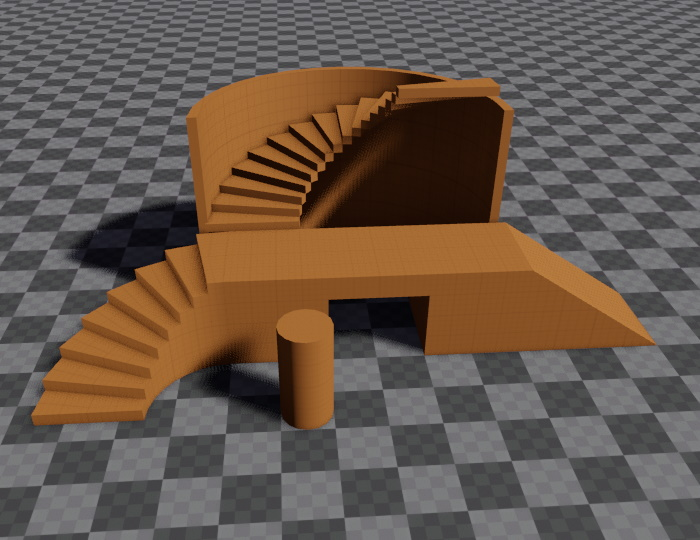
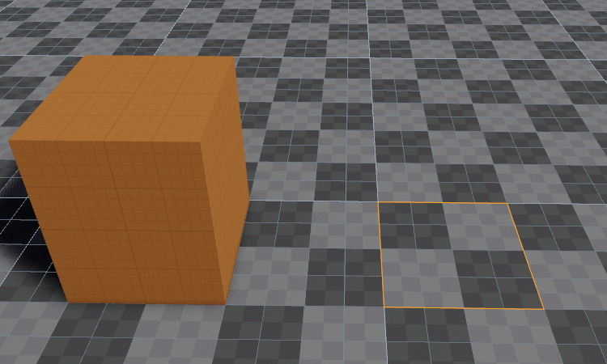
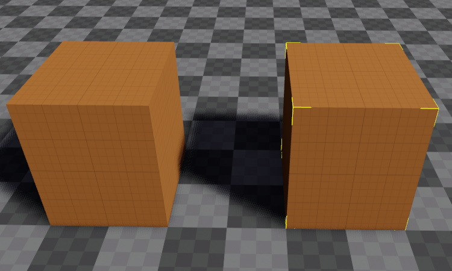
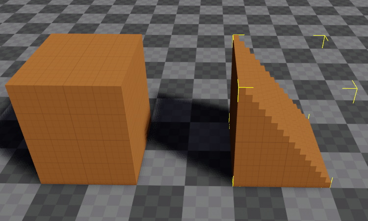
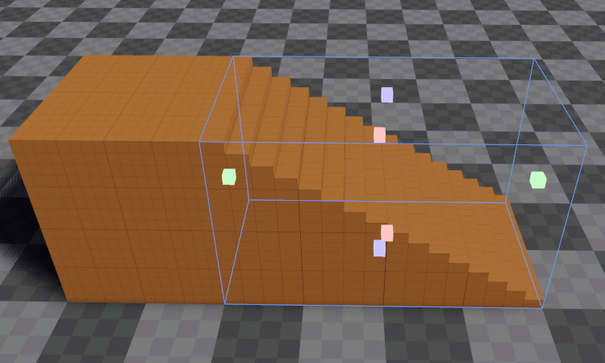

Greyboxing
Greyboxing (or whiteboxing) is the process of blocking out a rough level concept to test ideas, before working on the details. The EZ editor provides a dedicated tool to quickly create the most commonly needed geometric shapes to block out a level, such as boxes, stairs, ramps and columns.

Video: How to use the greyboxing tool

Creating Shapes
To activate the greyboxing tool, press the B key or click the brick icon in the toolbar. The statusbar will now display how to proceed.
Hold
CTRL. If the grid is enabled, it will show in which plane you will draw. Now left-click and draw a rectangle.
Release the left mouse button to finish the rectangle. Now move the mouse up and down to choose the height of the box.

Left-click once more to finish the shape.

From the object properties you can now select a different shape.

Activate the manipulator to easily adjust the shape.

Creating Shapes in Air
By default you will draw the next shape starting at the picked position under your mouse cursor. If you want to draw a series of platforms in air, you can reuse the height of the previously drawn shape by holding CTRL and SHIFT before drawing the next rectangle.
Materials
You can change the material of a greybox shape either through its properties, or by dragging and dropping a material from the asset browser onto the shape. Additionally, if you have a material selected in the asset browser while creating a new shape, it will automatically get that material assigned.
Static Collision
As long as a greyboxing object has the GenerateCollision property set, it will automatically get a collision mesh with the default collision layer (0). It's assigned material determines which surface is used for physical interactions.
Dynamic Collision
The greyboxing shape is not meant to be used for dynamic collisions. That means, if you attach a dynamic Jolt actor, it will not get the necessary physical setup to behave correctly. Instead, its collision mesh will simply be disabled entirely. You can therefore use greybox shapes for dynamic objects, but you need to add the required physics shapes yourself.
Occlusion
Greyboxing geometry can act as occluders for occlusion culling. By default this is enabled for all greyboxing geometry, but it should be disabled for small objects and objects that are unlikely to occlude much. Also consider disabling it for more detailed geometry. If you need an invisible occluder, use an occluder component instead.